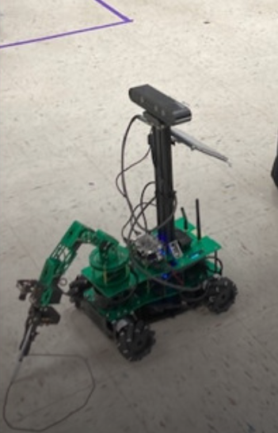
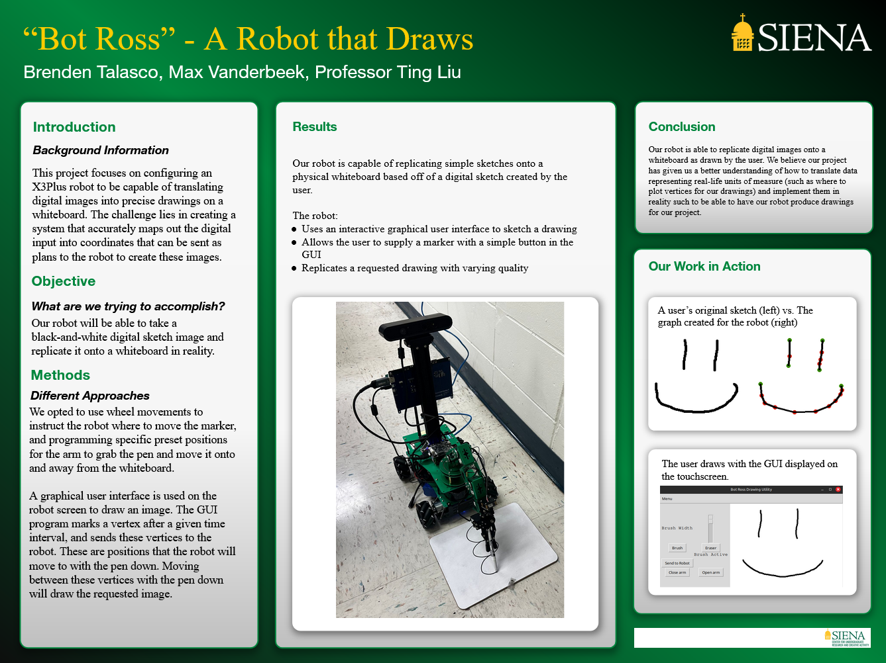

Bot Ross Robotics Project
This project utilized the X3Plus robot running ROS to make the robot replicate drawings inputted into reality This was a semester-long project completed with a peer in the Siena College CSIS-370 Robotics course.
The main GUI application along with the graphing portion and calculations towards how the robot should move are within paint.py. The commands to actually move the robot are within main.py and are imported into and called from paint.py. Both of these files are inside the scripts folder. Otherwise, other files are included as reference material for our main project.
This project was featured in a Siena College news article on December 20th, 2024.
-
Image of the robot in the process of drawing.
 -
Our poster demonstrating the project.

Sorting Algorithm Visualizer
This project showcases the efficiency of several different sorting algorithms using a graphical representation of data from Dr. Teresco's METAL project. The user may also run tests on the METAL data to determine the speed of each algorithm on their machine. This project was completed with a peer for the 2024 Siena College Academic Showcase in the CSIS-385 Algorithms course.
-
Visualized BubbleSort Algorithm running on BLR-region.tmg

-
Completed tests of sorting algorithms for latitudes within BLR-region.tmg

Original Campaign for the Nintendo DS
This is a Nintendo DS port of Original Campaign (a game concept made by a friend of mine), I worked on this during the break between my Fall 2023 and Spring 2024 semesters as a personal project. This was created using the NightFox and Libnds libraries.
-
OC for the DS running within the no$gba emulator.

-
OC for the DS running on a real console.